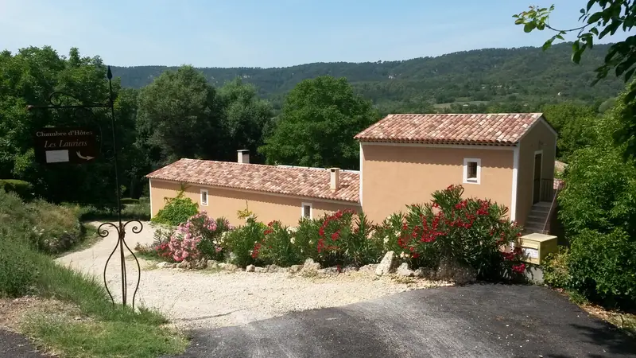
01
La maison
Une villa de campagne aux tuiles rondes, posée au bout du chemin de Quinson. Votre chambre est indépendante, à l’étage, avec son escalier extérieur.
Les Lauriers
Moustiers-Sainte-Marie
0 %
Moustiers-Sainte-Marie·Alpes-de-Haute-Provence
Chambre d’hôtes aux portes des gorges du Verdon
Le Verdon, vu du ciel
Cap sur Moustiers
Dans le village
Chambre indépendante · dès 65 € la nuit · parking et terrasse privés
Bienvenue
Entre les falaises du Verdon et les toits de Moustiers, une chambre claire, calme, avec jardin. Dans le village même, le Verdon et le reste du pays à portée de route.
Le lieu

Une villa de campagne aux tuiles rondes, posée au bout du chemin de Quinson. Votre chambre est indépendante, à l’étage, avec son escalier extérieur.
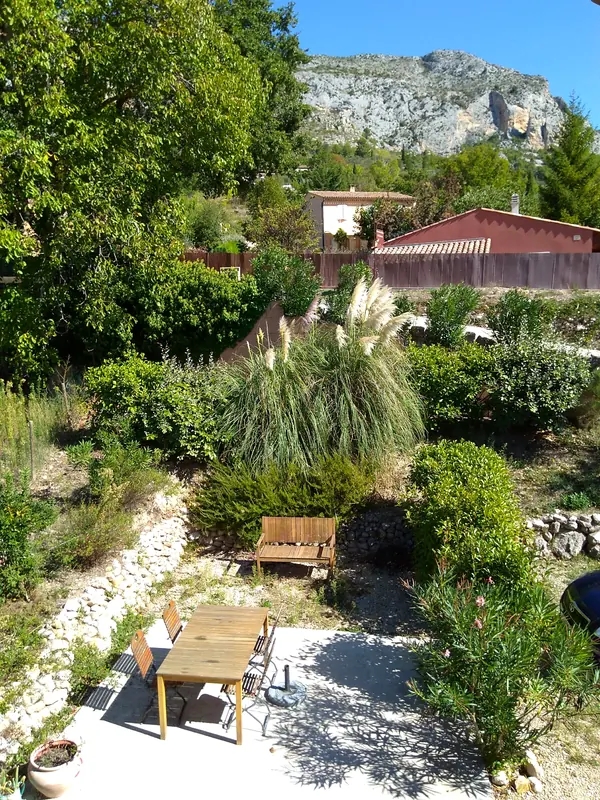
Graminées, rocaille et une grande table pour les repas dehors, au pied de la falaise.
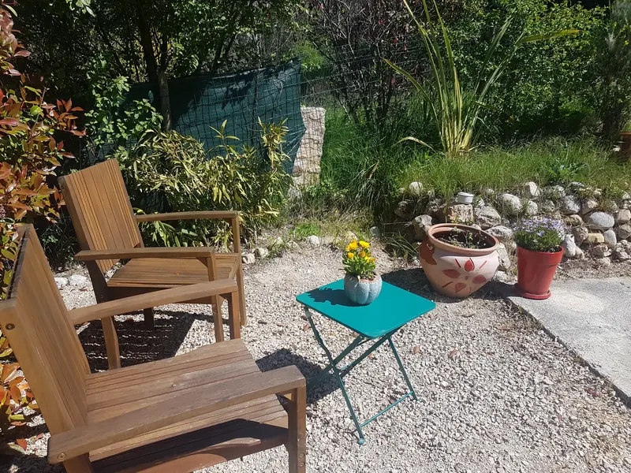
Deux fauteuils, un café, le soleil de Provence. Une terrasse privée, avec son mobilier de jardin, rien que pour vous.
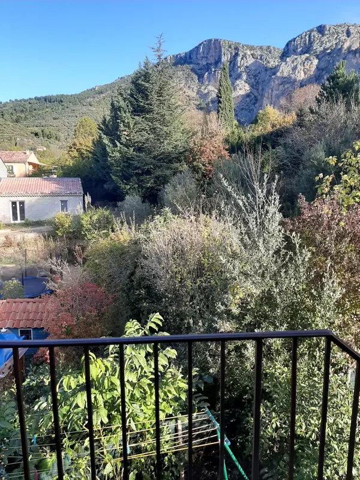
Depuis l’étage, le regard file vers les reliefs de Moustiers. Une vue qui, disent nos hôtes, vaut le détour de jour comme de nuit.
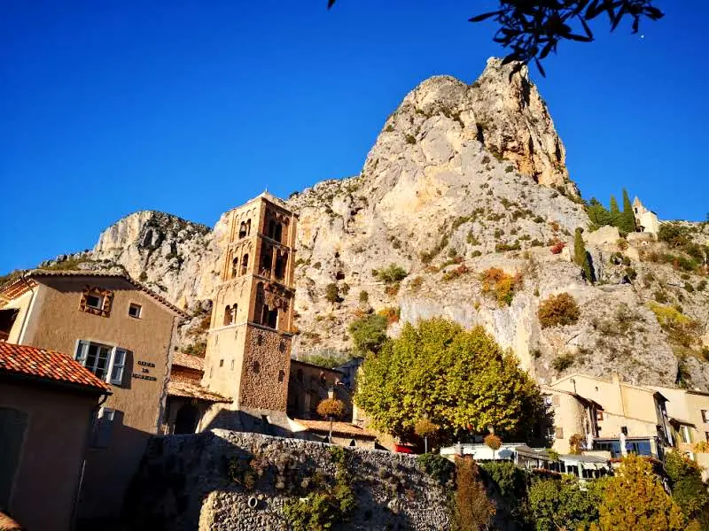
Dans le village même : ruelles, faïenceries, place du village et, au-dessus des toits, la falaise de Moustiers.
La chambre
Un grand lit de 160 × 200, des murs vert-de-gris, un coin repas en bois ancien et une salle d’eau privative. La chambre est indépendante, à l’étage, avec sa terrasse et son parking.
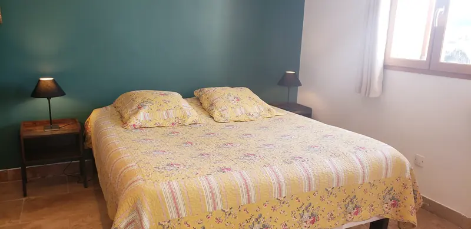
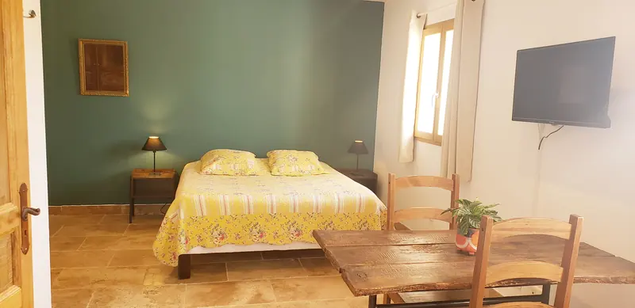
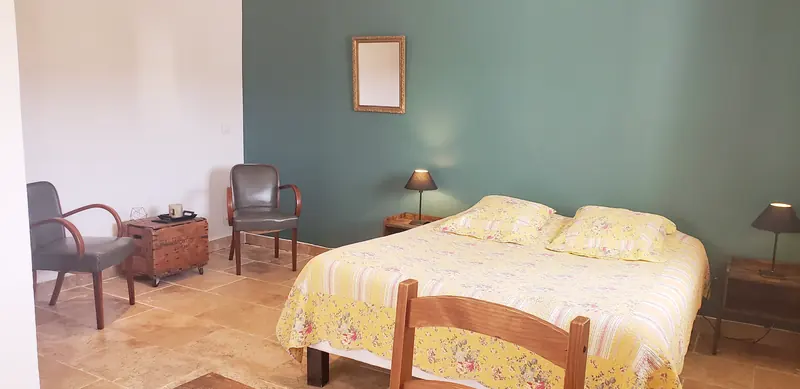
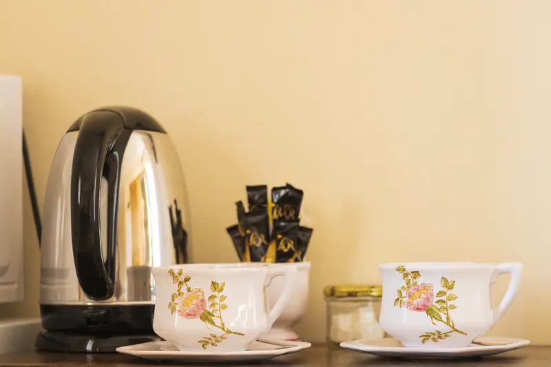
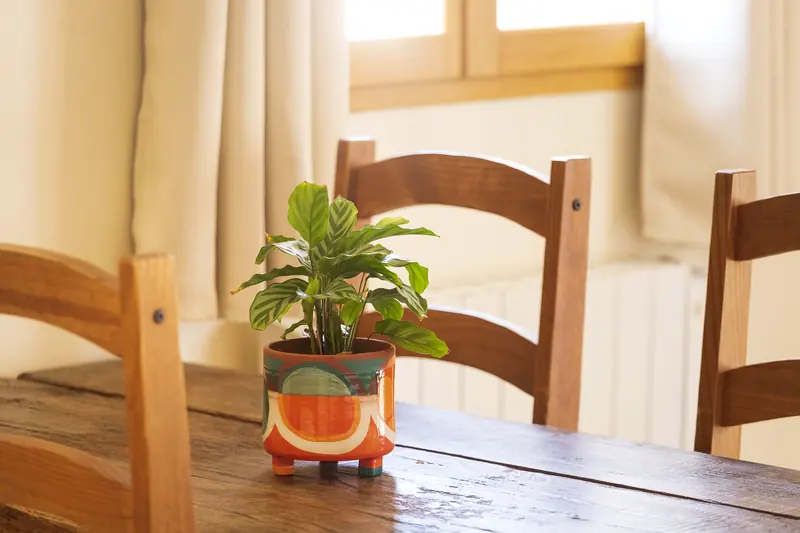
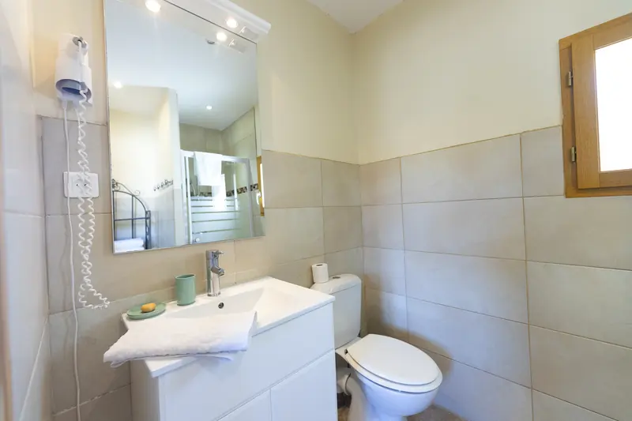
Alentours
Posée à l’entrée des gorges, la maison est le bon point de départ : on flâne à pied dans le village, on prend la voiture pour le lac, le canyon, les plateaux.
Village de faïence perché au pied de ses falaises : le musée de la Faïence, les ruelles et les commerces se font à pied.
L’entrée du Parc naturel régional du Verdon est à trois kilomètres : belvédères, falaises et rivière turquoise.
Baignade, paddle, kayak. Un sentier de randonnée y mène à pied, environ 40 minutes d’après l’un de nos hôtes.
Des chemins de campagne partent des environs de la maison : on marche sans reprendre la voiture.
Depuis La Palud-sur-Verdon, la boucle des plus grands belvédères sur le canyon.
Les champs de lavande, en juin et juillet, à perte de vue.
Avis des voyageurs
Parfait ! Un très bon accueil, l’emplacement est idéal, les lits très confortables, le point de vue sur Moustiers est fantastique, de jour comme de nuit !
Le logement est propre, bien équipé et situé dans un endroit calme et reposant. Le propriétaire est très aimable. Je le recommande pour un séjour prolongé.
Bon rapport qualité prix. Au calme, accès centre-ville rapidement, ainsi qu’à la départementale pour sillonner dans les alentours.
La chambre est confortable et bien chauffée, il y a tout ce qu’il faut pour se préparer un petit déjeuner.
Super maison d’hôtes, très calme et séjour en autonomie.
Chambre spacieuse, chaleureuse, propre. Propriétaires agréables et disponibles. Séjour agréable !
Extraits d’avis publiés sur la fiche Google « Chambre d’hôtes Les Lauriers », prénoms abrégés. Les avis ne sont pas vérifiés par Google.
Réserver
Les dates déjà prises sont barrées. Votre demande arrive directement dans l’agenda de l’hôte, qui vous confirme par téléphone ou par e-mail. Aucun paiement en ligne.
Mode démonstration : cette demande n’a pas été transmise. Une fois le scénario Make branché, elle créera l’événement dans l’agenda de l’hôte.
Infos pratiques
Questions fréquentes
Deux personnes (lit de 160 × 200 cm). Une personne supplémentaire est possible sur demande, pour 15 € par nuit : précisez-le dans votre demande.
Non, mais un coin café et thé est à votre disposition dans la chambre (bouilloire, micro-ondes, réfrigérateur). Les commerces du village sont tout près.
Choisissez vos dates dans le calendrier : les nuits déjà prises sont barrées. Votre demande est enregistrée dans l’agenda de l’hôte, qui vous confirme sa disponibilité par téléphone ou par e-mail. Aucun paiement n’est demandé en ligne.
Sur place, par chèque ou en espèces. La taxe de séjour s’ajoute au tarif.
L’arrivée se fait à partir de 15 h et le départ avant 10 h 30. Si vous arrivez tard, prévenez l’hôte : un champ est prévu dans le formulaire.
Le parking est privé et gratuit. Le village et ses ruelles se visitent à pied depuis la maison.
La fiche de l’office de tourisme indique que les animaux sont acceptés ; merci de le préciser dans votre demande. La chambre est non-fumeur.